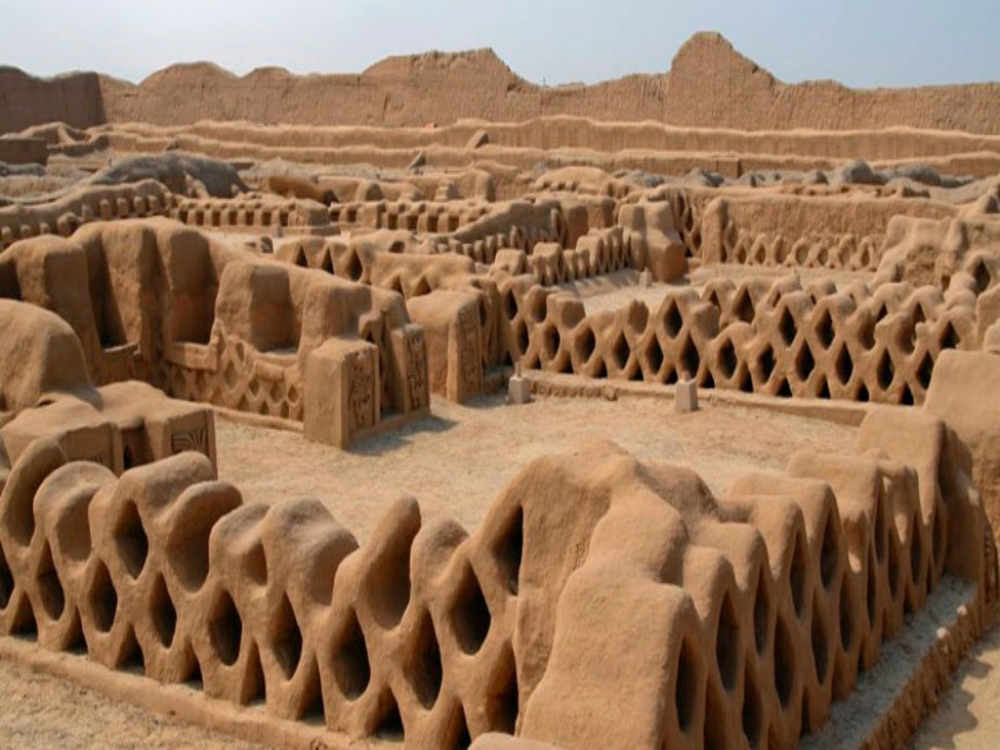

01
La Ciudadela de Chan Chan
Una majestuosa ciudad de barro que conserva la historia y el legado de la culture Chimú, con enormes muros decorados, plazas ceremoniales y antiguos recintos que sorprenden a sus visitantes.